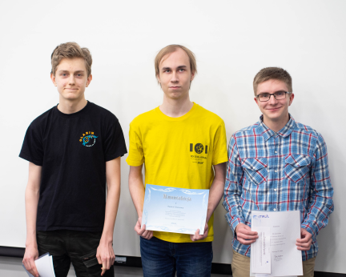

Datatähti 2019 -loppukilpailu järjestettiin 17.1.2019 Aalto-yliopiston tietotekniikan laitoksella. Loppukilpailuun osallistui 19 kilpailijaa alkukilpailusta.
Loppukilpailussa oli 5 tuntia aikaa ratkaista 7 ohjelmointitehtävää. Jokaisesta tehtävästä pystyi saamaan 0–100 pistettä.
Loppukilpailun tulokset ovat tässä:
| sija | nimi | koulu | pisteet |
|---|---|---|---|
| 1 | Santeri Toivonen | Eiran aikuislukio | 412 |
| 2 | Roope Salmi | Olarin lukio | 412 |
| 3 | Olli Järviniemi | Päivölän opisto | 328 |
| 4 | Tuomas Katajisto | Ulvilan lukio | 328 |
| 5 | Matias Järvenpää | Ulvilan lukio | 312 |
| 6 | Into Almiala | Olarin koulu | 277 |
| 7 | Samu Huovinen | Joensuun normaalikoulun lukio | 254 |
| 8 | Rudolf Laine | Helsingin suomalainen yhteiskoulu | 251 |
| 9 | Pekka Ristola | Olarin lukio | 248 |
| 10 | Tuukka Yildirim | Janakkalan lukio | 228 |
| 11 | Alexander Popov | Itä-Suomen koulun lukio | 228 |
| 12 | Tuomas Simula | Olarin lukio | 225 |
| 13 | Valtteri Aurela | Olarin koulu | 225 |
| 14 | Dan Näsman | Haukilahden lukio | 190 |
| 15 | Kerkko Konola | Oulun normaalikoulun lukio | 164 |
| 16 | Ilmari Ayres | Tampereen klassillinen lukio | 161 |
| 17 | Valtteri Ilola | Oulun normaalikoulun lukio | 149 |
| 18 | Henri Ahola | Schola Europaea Luxembourg I | 149 |
| 19 | Kauri Pälsi | Helsingin suomalainen yhteiskoulu | 116 |